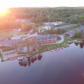
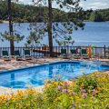
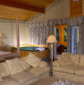
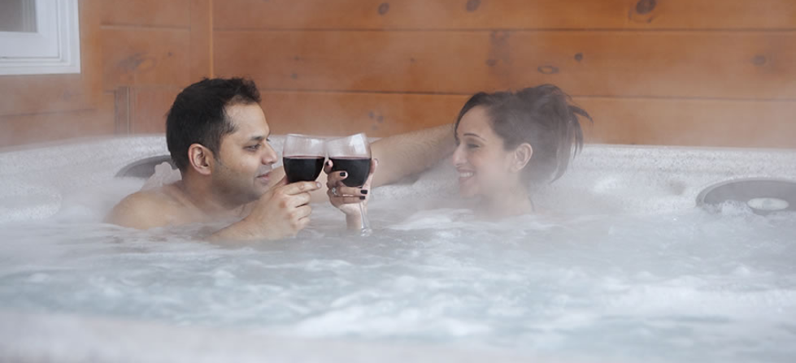
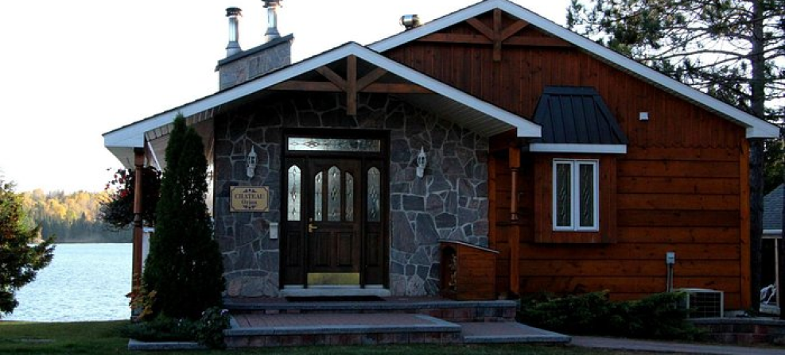
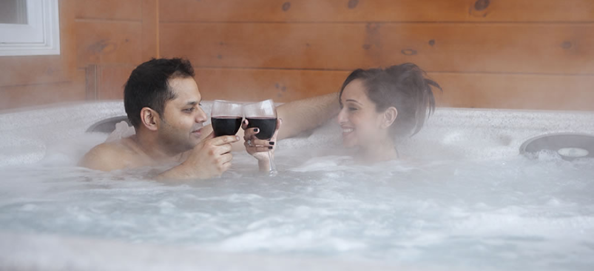
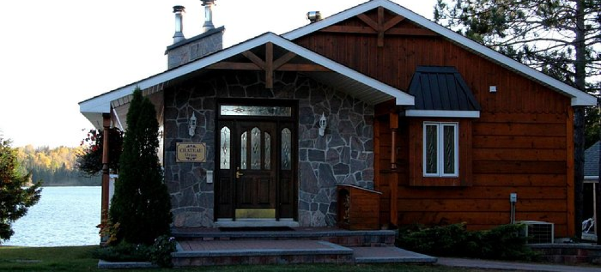
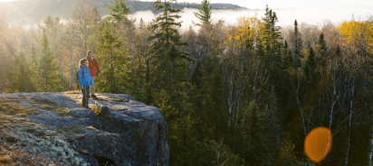
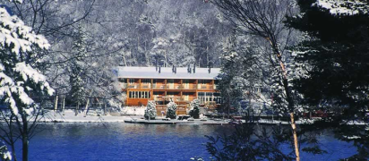

Book Now
Welcome to Couples Resort!
  Couples Only Romantic Getaway
Couples Resort
Escape to a secret hideaway where every day feels like Valentine's Day. Whether you're celebrating, seeking rejuvenation, indulging in a romantic getaway, or craving adventure in Algonquin Park, this eco-friendly resort offers it all. Enjoy 5-star accommodations ranging from Opulent Old European to Natural Algonquin styles, complete with lakefront private hot tubs, whirlpool baths, wood-burning fireplaces, and Netflix. Nestled in the wilderness at the edge of a village, the resort is a haven for wildlife, featuring mini-meadows and carbon-neutral, solar-powered operations that save over 68,000 liters of fuel annually, making it the perfect blend of romance and sustainability.
Toll Free - 1 866-202-1179
Email - info@couplesresort.ca
139 Galeairy Lake Rd,
Whitney - Algonquin Park, On, K0J 2M0.
4 Season Resort
Couples Resort
With activities that are sure to keep you entertained throughout your stay a variety of sports equipment included. Winter enjoy cross-country skiing, ice skating, ice hiking and snow shoeing. Warmer seasons explore the area by hiking and biking. Lakeside Pool, Self - Service & Serviced Patios Fall enjoy Autumn colours, hiking and biking
Winter
Spring
Summer
Fall
 



All Inclusive
Couples Resort
EVERY GUESTS RECEIVES THESE KEY EXPERIENCES:5-Star, Classic 5-Course Gourmet Dinner in our European Style Dining Room or as Room Service brought to you. Breakfast as Classic Room Service also brought to you. All with no-tipping and more
Rooms
Menu
Spa
Stay Connected. Valentine's Every Day. All-Inclusive, 1st Class Gourmet Dining and breakfast Welcome to Couples Resort. A Boutique 5 Star Luxury Resort, which sits on the shores of Galeairy Lake, a semi-private lake, 3/4 of which is in Algonquin Park.
Are meals included in the price? Yes, a 5-course gourmet dinner and breakfast are included. Lunch is available from 12 pm to 4 pm for an additional charge or you can eat while out.
Is tipping required? No, tipping is not necessary. The price includes all gratuities. We encourage you to enjoy additional services, extend your stay, or share your experience with others.
Do you accept pets? We do not accept pets, but you can bring a certified therapy pet. The nearby Adventure Lodge (4 km away) accepts pets.
What are the check-in/check-out times? Check-in: 4 pm - 5 pm. Check-out: 11 am. Payment is made upfront, and you are responsible for all charges during your stay.
What does all-inclusive mean? All-inclusive includes room rates, taxes, a 5-course dinner, breakfast, and sports equipment. Tipping is also included.
Is there internet available? Yes, we offer free high-speed fiber-optic internet, sufficient for streaming and VPN use.
Do you have EV chargers? Yes, we have 8 Level 2 charging stations, including Tesla chargers. No fees.
When is the outdoor pool open? The outdoor thermal saltwater pool is open from May long weekend to late September, weather permitting.
Where can I see moose? Moose are most commonly spotted in Algonquin Park, especially along Highway 60. They're most visible in May and June.
Why is the pool saltwater? The thermal saltwater pool is heated by the sun and uses natural salt to sanitize without harsh chemicals, making it gentler on skin and eyes.
What are the Sport Centre hours? The Sport Centre is open daily from 8:30 am to 4:30 pm.
Couples Resort
139 Galeairy Lake Rd, Whitney - Algonquin Park, On, K0J 2M0. Toll Free 1 866 202-1179 E-mail: info@couplesresort.ca TRAFFIC TIP: Coming and going to TORONTO on Big Traffic Jam Days. Save up to 2 hours by going directly through Beaverton, Ontario.
Directions To Couples Resort Algonquin Park, Ontario Canada Enter your address, city and province or state (example: 84 street name, toronto, ontario) and get google maps directions to the resort.